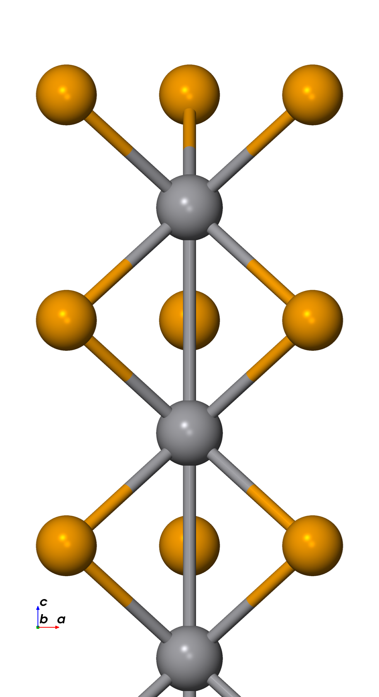
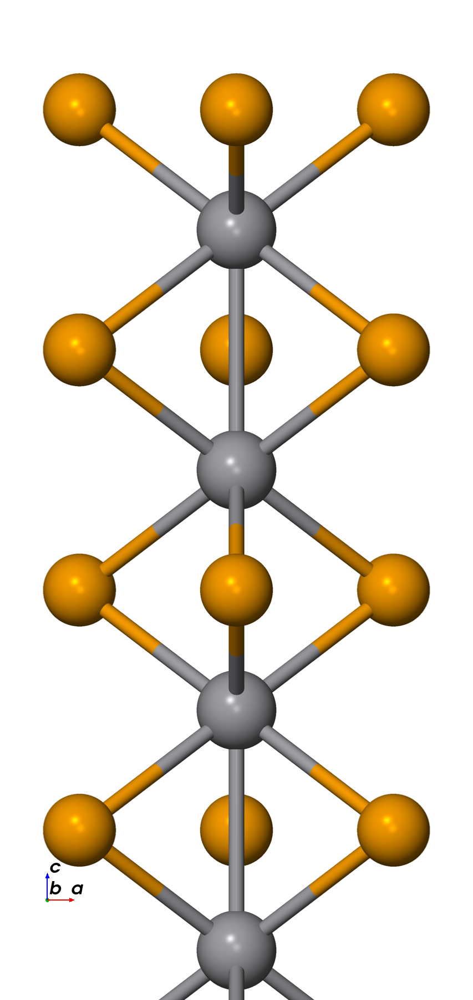
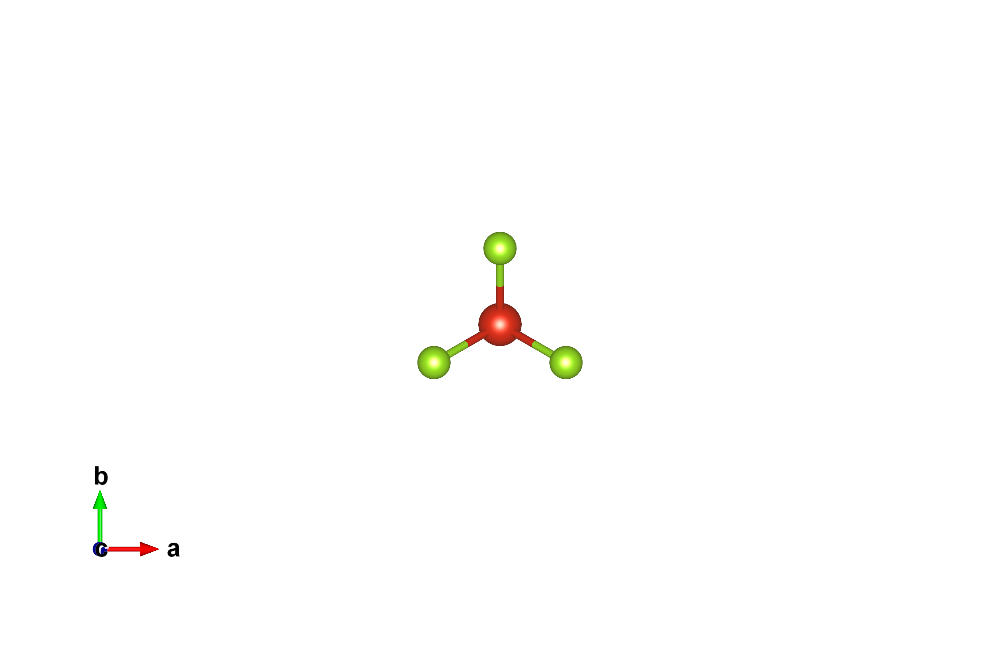
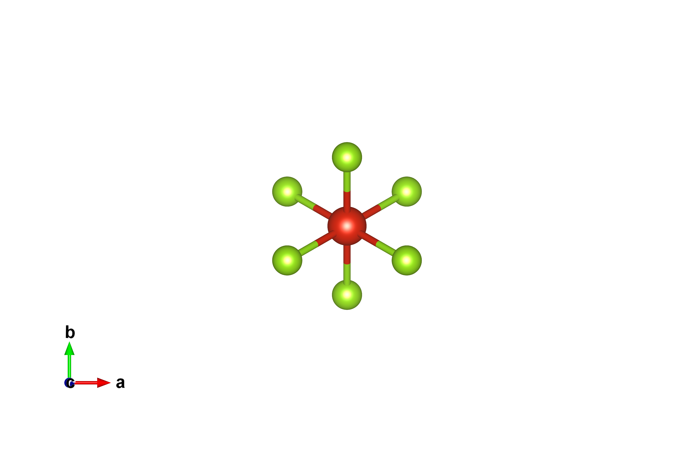
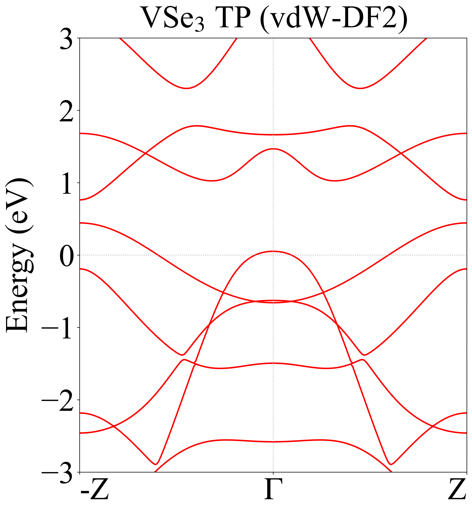
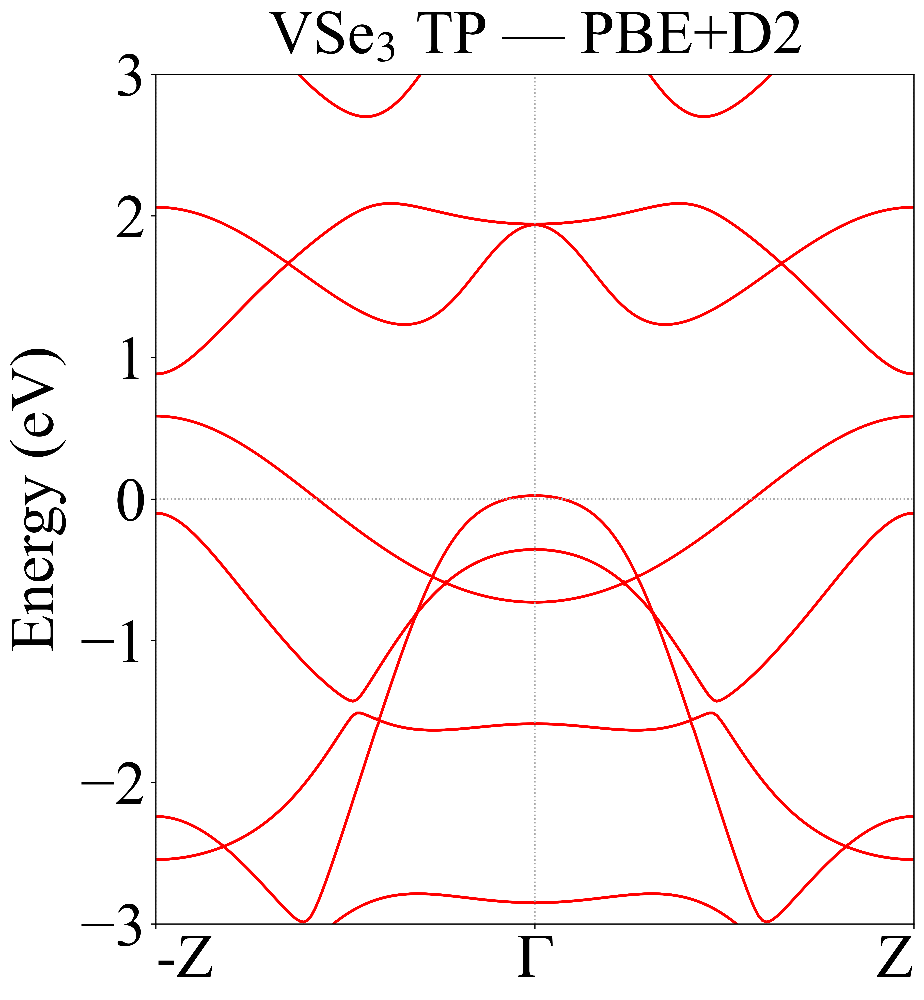

VSe₃ TP vs TAP 안정성
목표
VSe₃에서 어느 1D chain 배위 — TP(trigonal prismatic)인지 TAP(trigonal anti-prismatic)인지 — 가 더 안정한지 규명하여, CNT 구속 VSe₃ single chain이 TP라는 실험(STEM) 주장을 뒷받침한다. 둘은 chain 축을 따라 인접한 Se₃ triangle 사이의 60° 회전으로 구별된다: TP에서는 triangle들이 정렬돼 있고(top view에서 Se 3개), TAP에서는 인접 triangle이 60° 회전돼 있다(top view에서 6-pointed star).
방법
초기 구조는 문헌 파라미터로 build_vse3.py를 써서 만들었다:
TP는 dVSe = 2.45 Å, dVV = 3.09 Å(공유 반지름 합, Cordero 2008 +
NbSe₃ scaling, Hodeau 1978)에서; TAP은 동일 구조를 60° 회전한 것(c = 6.18 Å, 8 atoms).
둘 다 SIESTA에서 relax했다. 이어서 TP/TAP 안정성을 두 functional, vdW-DF2 (LMKLL)와 PBE+D2로
비교했다. 단일 functional 내부에서는 total-energy 차이가 유효한 비교지만, functional 간에는
그렇지 않다(안정성 방법론 참조).
결과
두 functional 모두에서 TP가 TAP보다 더 안정하다.
| Functional | ΔE (TAP 대비 TP) | TP band 성격 |
|---|---|---|
| vdW-DF2 | TP가 41 meV/atom 더 안정 | metallic |
| PBE+D2 | TP가 20 meV/atom 더 안정 | metallic |
TP band 구조는 두 방법 모두에서 metallic이다. (출처: 2026-04-07 미팅; 41 meV/atom의 vdW-DF2 값은 stability-comparison-method 노트에도 인용돼 있다.)






논의
TAP relaxed 구조는 STEM 이미지 시뮬레이션을 위해 실험팀(Dr. Yangjin Lee)에 전달됐다 (2026-04-16). vdW-DF2 relaxed 국소 파라미터: c = 5.535 Å, V–Se = 2.508 Å, V–V = 2.768 Å. 계획된 확장은 Se-vs-Te (VSe₃ vs VTe₃) TP/TAP 비교이며, VTe₃ TP/TAP 초기 구조는 만들었으나 (case 03/04) 그 relaxation들은 2순위로 분류돼 여기서는 보고하지 않는다.